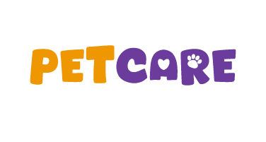

<!DOCTYPE html>
<html lang="es"></html>
<html>
    <head>
        <title>Pet Care</title>
        <meta charset="utf-8">
        <link rel="stylesheet" href="css/servicios.css">
        <link rel="shorcut icon" type="image/icon" href="img/Mesa de trabajo 1.png">
        <meta name="author" content="Vanesa Carrion">
        <meta name="keywords" content="sitio web petcare, proyecto final, 2 trimestre,Bogotá,colombia">
        <meta name="description" content="Inicio,quienes somos, pagina incial petcare">
        
    </head>
    <body>
       <header>
        <a  href="index.html"></a>
        </a>
        <nav>
          <a href="index.html" class="nav-link">Inicio</a>
          <a href="Servicios.html" class="nav-link">Servicios</a>
          <a href="Équipo medico.html" class="nav-link">Équipo médico</a>
          <a href="Testimonios.html" class="nav-link">Testimonios</a>
          <a href="Contacto.html" class="nav-link">Contacto</a>  

        </nav>
       </header>

       
       <h1 class="nservicios">Nuestros Servicios</h1>
       <h3 class="pbanner">En petcare encuentra diversos servicios<br>
         para el cuidado de la salud e higiene de <br>
         tu mascota. </h3>

         <div class="grupo1">
         <h2>Baño y Peluqueria</h2>
        </div>
        

        <div class="grupo2">
        <h2>Consultas</h2>
        </div>
        

        <div class="grupo3">
            <h2>Vacunas</h2>
        </div>
        

        <div class="grupo4">
            <h2>Cirugias</h2>
         </div>
        

         <div class="grupo5">
            <h2>Urgencias</h2>
         </div>
         

         
         
         <h2 class="baño-p">Baño y Peluqueria</h2>
         <p class="p2">En clinica veterinaria Petcare ofrecemos servicio de baño y peluquería<br>
             con personal altamente capacitado y con productos especializados para <br>
             el cuidado de tu mascota que es escencial para mantenerlos lindos y saludables. </p>
        <p class="p3">Corte y baño completo incluye baño con shampoo natural, <br>
            secado corte, peinado, limpieza de oidos y corte de uñas.</p>
        
        
        <h2 class="consulta">Consultas</h2>
        <p class="p4">Nuestro servicio de consulta se enfoca en brindar una atención integral<br>
             y especializada, podrás encontrar médicos veterinarios especialistas en <br>
             diferentes areás altamente capacitados.
             <br>
             <br>

            Durante la consulta realizaremos un examen físico que evaluará a tu mascota<br>
             y nos permitira priorizar su atención centrandonos en el sistema afectado.<br>
            En Petcare contamos con las consultas más frecuentes como infecciones de oido<br>
            parasitos internos e externos, malestar estomacal, alergias e infecciones en la piel
           </p>
            

        
        
        <h2 class="vacuna">Vacunas</h2>
        <p class="p5">¡Protege a tu mascota con nuestro servicio de vacunación!<br>
            Este servicio siempre incluye una valoración inicial, la vacunación <br>
            es muy importante para prevenir enfermedades.<br>
            <br>
            En clinica veterinaria Pat care ofrecemos vacunación unicamente <br>
             para gatos y perros, tenemos vacunas contra la rabia, vacuna polivalente<br>
             y vacunas contra el parvovirus y moquillo.
            </p>
            

        <h2 class="cirugia">Cirugias</h2>
        <p class="p6">En pet care ofrecemos una amplia gama de prodecimientos quirurjicos,<br>
             desde los comunes hasta los más complejos.<br>
            Nuestra sala de cirugía esta capacitada con tecnología de ultima<br>
             generación por lo tanto tu mascota estara en las mejores manos.<br>
             Te ofrecemos las cirugias más comunes como lo son estirilización, hernias, <br>
             operación de cataratas y cirugias por fracturas o luxaciones.
            </p>
            
        
            <h2 class="urgencia">Urgencias</h2>
            <p class="p7">En petCare contamos con urgencias  24/7 para atender a tu mascota.<br>
                Entendemos que las urgencias pueden ocurrir en cualquier momento<br>
                 por eso tenemos a tu dispocisión un equipo experto <br>
                 y capacitado para atender a tu mascota.</p>
            
                 

                 <footer>
                <div class="lfooter">
                    <a href="index.html"></a>
                    <p class="copy">&copy;2024 Página Pet Care- Todos los derechos reservados</p>
                </div>
                
                
            </footer>
            
        </body>
        </html>
